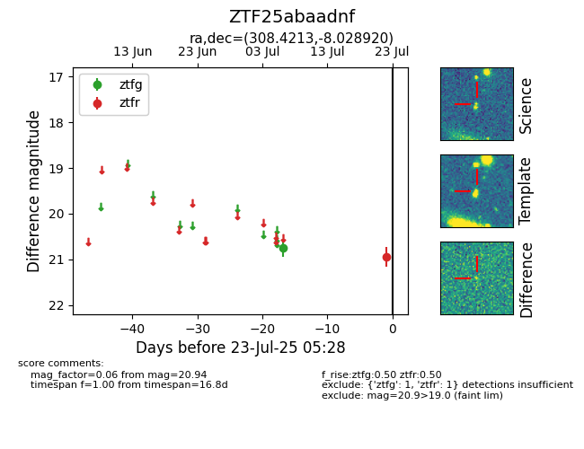

Target ZTF25abaadnf at 2025-07-23 12:37, see:
FINK: fink-portal.org/ZTF25abaadnf
Lasair: lasair-ztf.lsst.ac.uk/objects/ZTF25abaadnf
ALeRCE: alerce.online/object/ZTF25abaadnf
alt names
ZTF25abaadnf (ztf,fink)
coordinates:
equatorial (ra, dec) = (308.4213,-8.02892)
galactic (l, b) = (37.4454,-26.35556)
photometry
last ztfg=20.75, ztfr=20.94
1 ztfg, 1 ztfr detections
